Met enige regelmaat komen er op Schiphol militaire vliegtuigen. Terwijl dit een civiele luchthaven is, dat maakt het extra bijzonder. Daarom ga ik regelmatig kijken. De beelden verzamel ik hier of ik link door naar een uitgebreidere pagina. Ook eventuele beelden van andere vliegvelden zal ik hier bundelen.
9 augustus 2026 Britse Ascot brengt kort bezoek
Het was aan het einde van de middag op zondag 9 augustus. De zon zakte langzaam boven de polder toen het kenmerkende, diep-brommende geluid van vier zware turbopropmotoren over Schiphol klonk. Geen alledaags geluid voor spotters op de luchthaven: dit was de ZM420, een Airbus A400M Atlas van de Britse Royal Air Force (RAF), vliegend onder de roepnaam Ascot 4233 (RRR4233). Het toestel was zijn reis die ochtend begonnen in het Poolse Kraków. Na een tussenstop op de luchthaven van Hamburg zette de gigantische militaire vrachtkist koers richting Nederland. Vliegtuigspotters langs de kant stonden paraat toen de ZM420 de dalingshoek inzette naar de Oostbaan. Met zijn imposante grijze silhouet en tegen draaiende propellers daalde de A400M gecontroleerd af en raakte soepel het asfalt van de kortste baan van Schiphol. Na het uitrollen taxiede het toestel rustig richting het platform op Schiphol-Oost. Na een korte stop op het platform, maakte de bemanning zich alweer gereed voor vertrek. Met het typische, zware motorgeluid rolde de ZM420 naar de Kaagbaan. Niet veel later klom de 'Atlas' krachtig op in de avondlucht, met als eindbestemming de Britse militaire basis bij Amesbury / RAF Boscombe Down (Verenigd Koninkrijk).
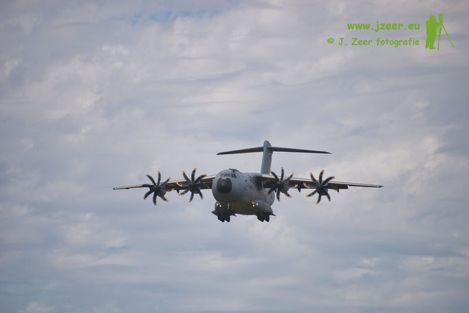
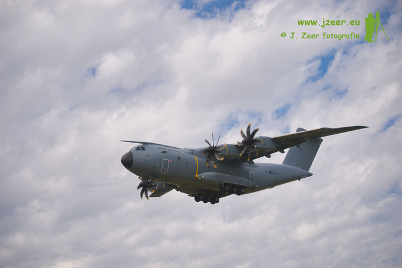
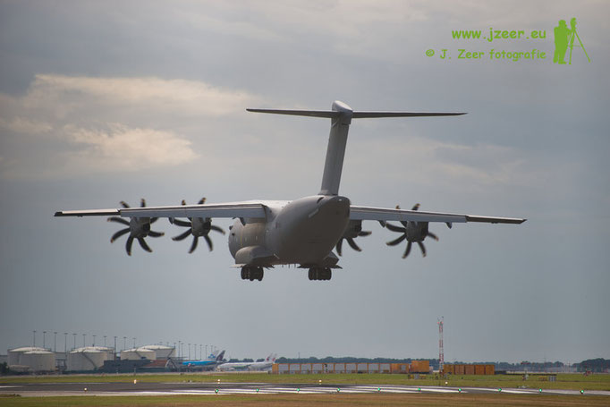
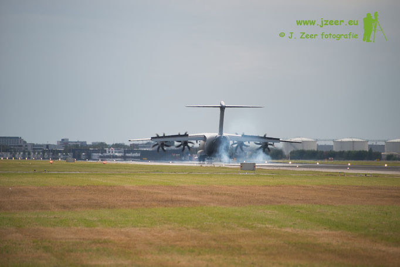
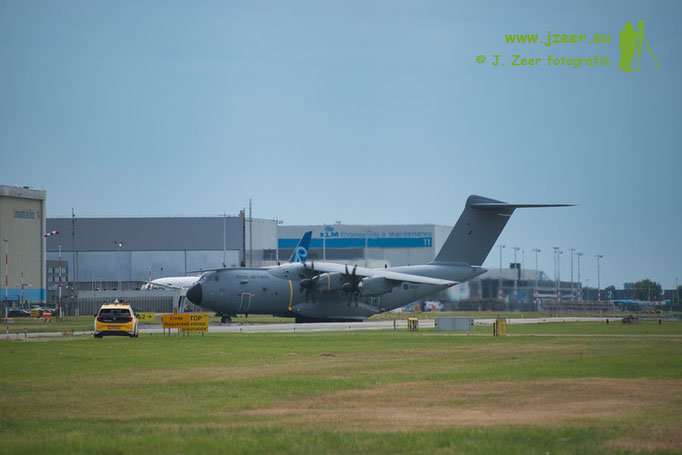
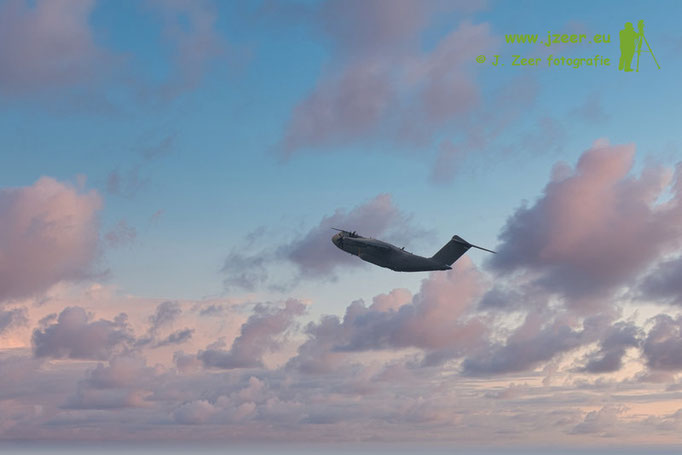
20 juni 2026 Japanse "Air Force one" vertrekt
Na een week in Nederland vertrekken de Japanse Keizer en Keizerin weer uit Nederland. De twee Japanse Boeings 777-300 ER brengen de Japanse delegatie naar Brussel voor het volgende staatsbezoek aan de Belgen. Bij de Nederlandse grens werd de Japanse "Air Force one" ontvangen door twee Belgische F16 straaljagers.
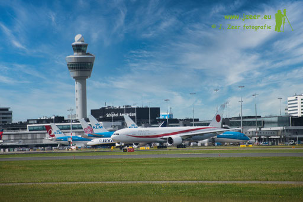
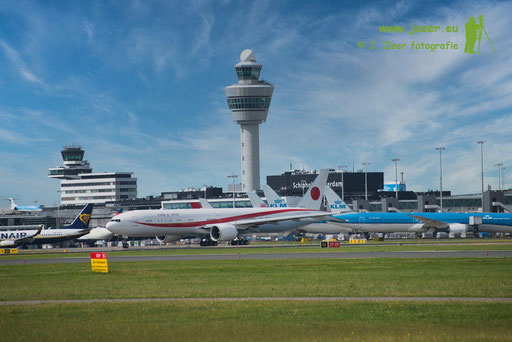
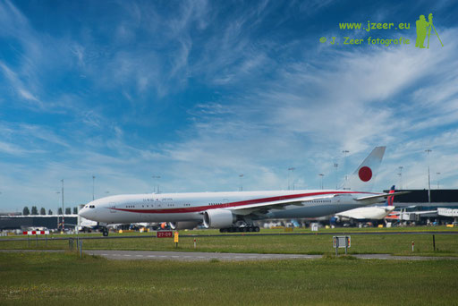
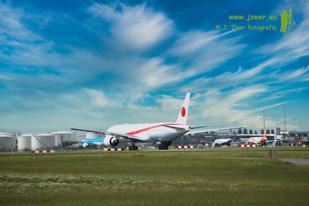
13 juni 2026 Japanse "Air Force one" op Schiphol
Zaterdagavond 13 juni landde twee Japanse Boeing 777-300 ER toestellen op de Buitenveldertbaan op Schiphol. Dit zijn de Japanse "Air Force One" en "Two". Deze brachten de Japanse Keizer en Keizerin naar Nederland voor het staatsbezoek. Het staatsbezoek zal echter pas komende woensdag beginnen. Vanwege de gezondheid van de Keizerin vliegen ze eerder naar Nederland zodat ze tijd heeft om bij te komen van de reis en zich op te laden voor het staatsbezoek.
De huidige regeringsvliegtuigen zijn sinds april 2019 in gebruik. Op dat moment vervingen ze de oude Boeing 747-400's. De Japanse luchtvaartmaatschappij ANA is verantwoordelijk voor het onderhoud van de 777's. De toestellen worden geëxploiteerd door het Japan Air Self Defense Force (JASDF) en vliegt daarom als militair toestel.
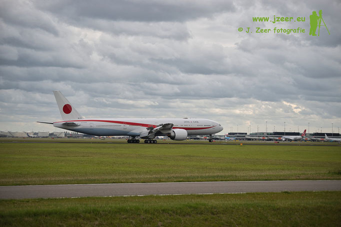
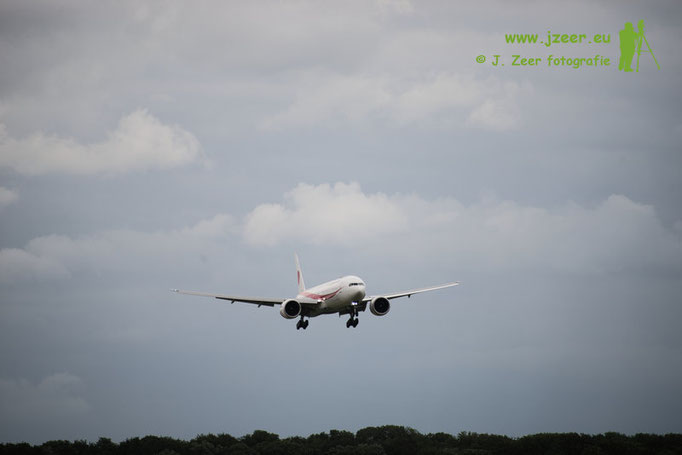
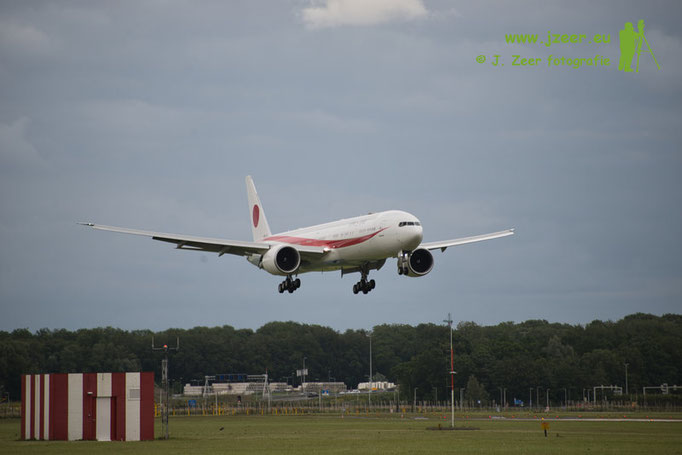
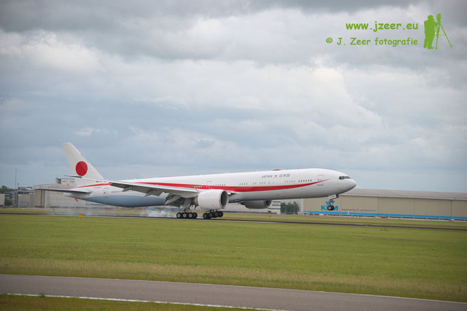
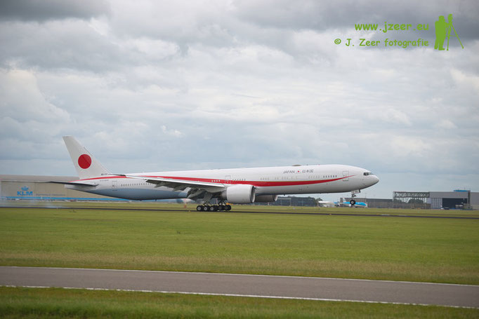
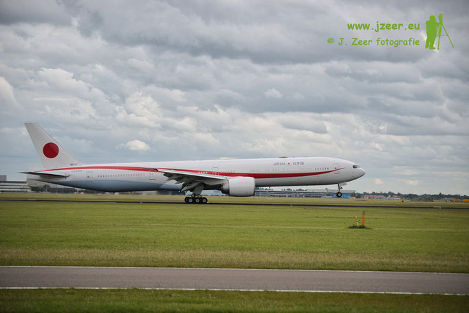
9 juni 2026 Duits militair toestel voor staatsbezoek
Dinsdag 9 juni vind het staatsbezoek van de Duitse bondspresident aan Nederland plaats. Na de officiële aankomst op Schiphol vanochtend, kwam er eind van de middag nog een tweede vlucht aan uit Berlijn. Rond 17:00 uur landde een Bombardier Global 6000 van de Duitse Luftwaffe op de Oostbaan. Het toestel bracht een laatste gast voor het staatsbanket. Direct na de landing werd de gast onder begeleiding van de Koninklijke Marechaussee naar het banket geëscorteerd.
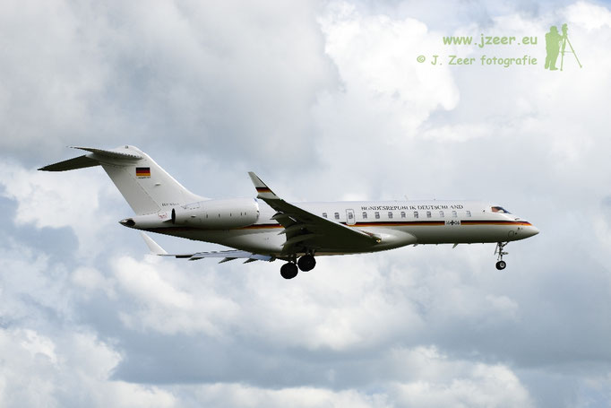
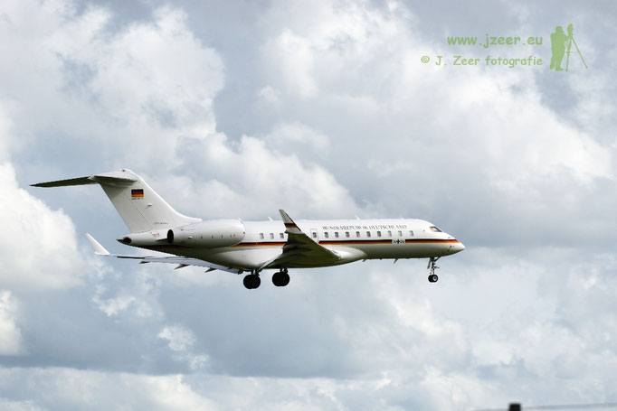
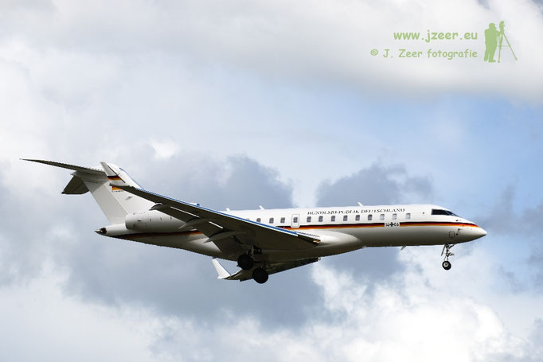
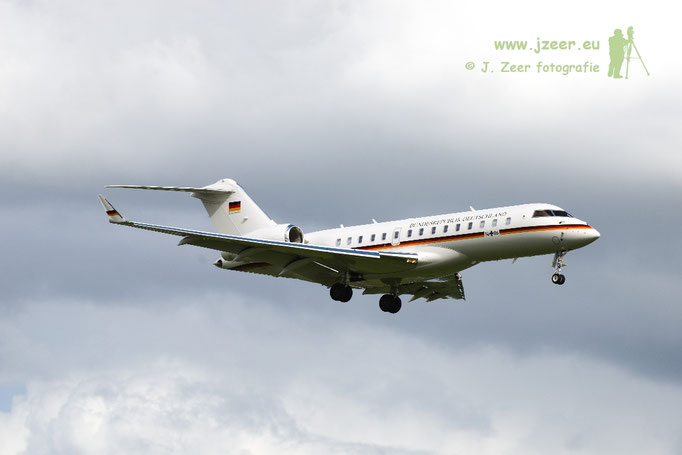
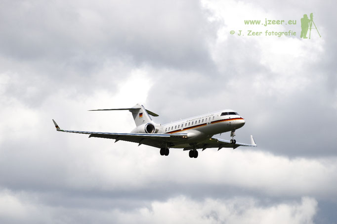
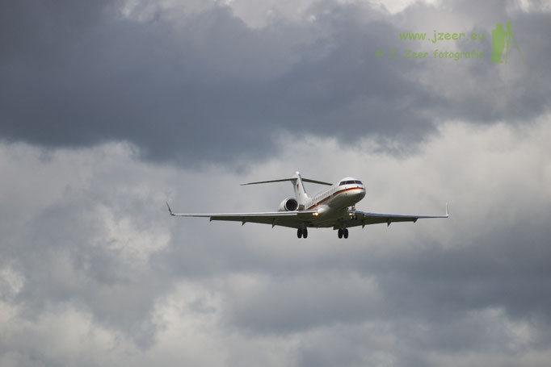
7 juni 2026 Canadese C-130
Op zaterdag 6 juni kwam een Canadese C-130 aan op Schiphol. De route begon 's ochtends al in Zagreb, waarna dit transport vliegtuig via een tussenstop in Polen naar Schiphol kwam. Op Schiphol-oost werd het toestel geparkeerd voor de overnachting waarna deze op zondag 7 juni weer vertrok naar Glasgow.
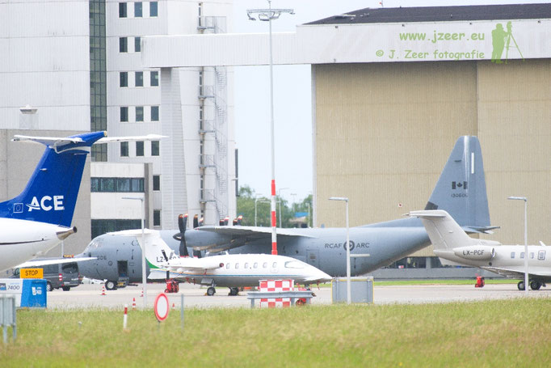
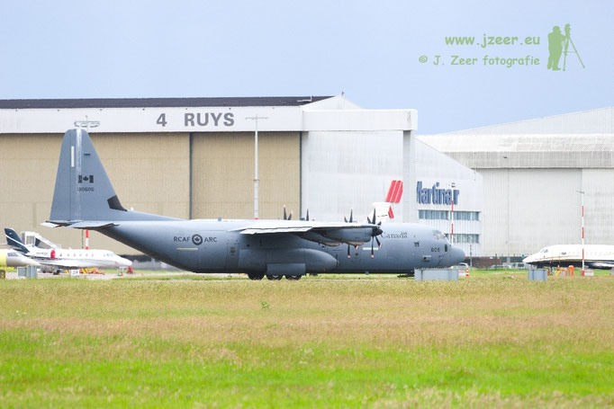
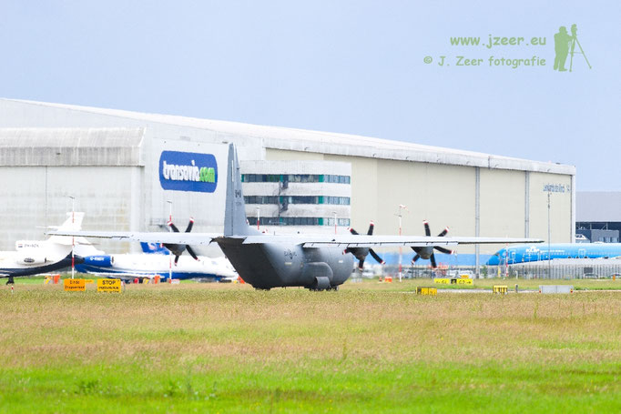
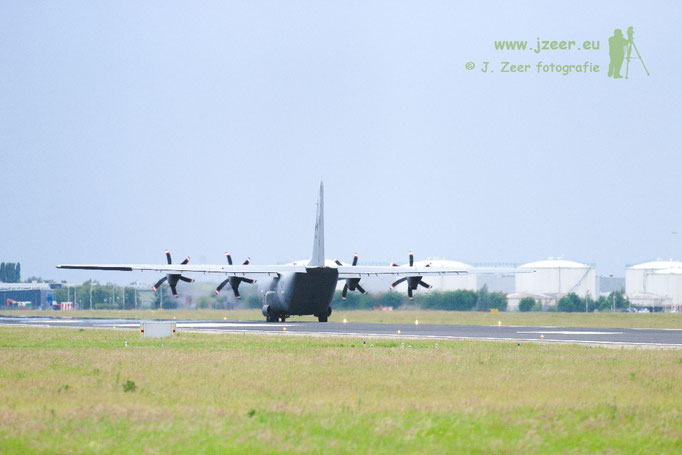
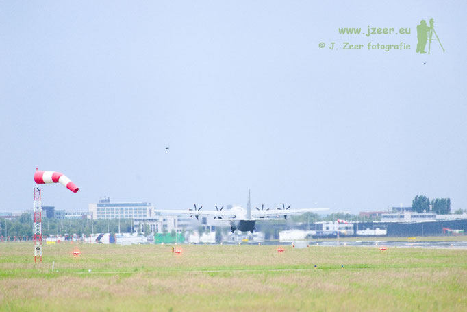
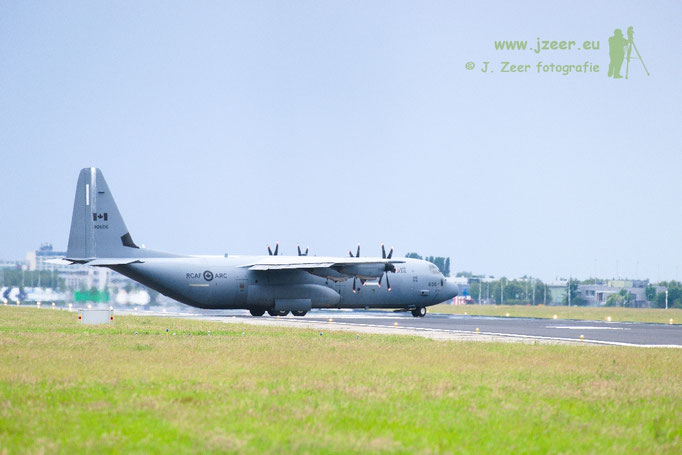
26 januari 2026 Royal Air Force (Brits) op Schiphol
Op 26 januari bracht een Britse Airbus A400 van de Royal Air Force met registratie ZM403 een kort bezoek aan Schiphol. Vanuit Hannover vertrok het toestel naar Brussel om uiteindelijk naar Schiphol te komen. Na landing op de Zwanenburglaan (36C), taxiet deze gelijk door naar de Polderbaan om via 36L weer weg te gaan. Terwijl hij klaar staat voor vertrek, wordt de start afgebroken. De baan wordt verlaten, enkele minuten later vertrek de Airbus alsnog.
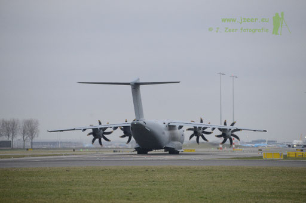
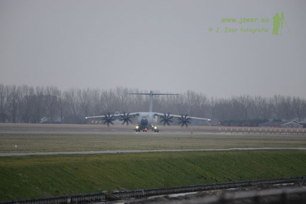
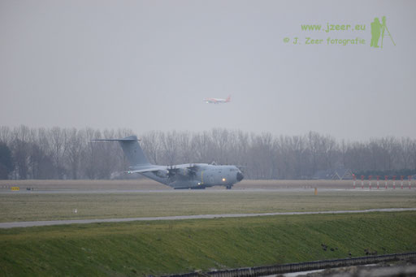
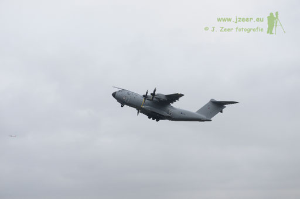
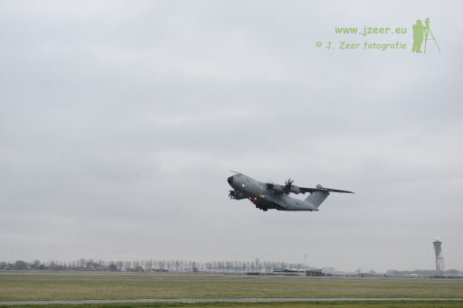
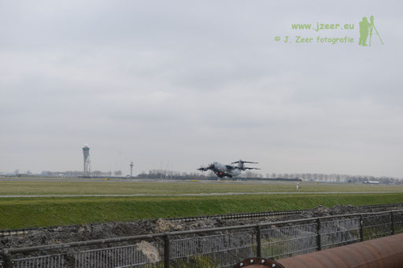
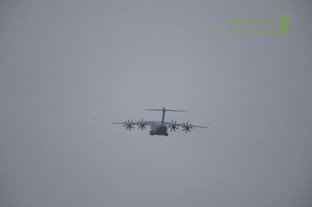
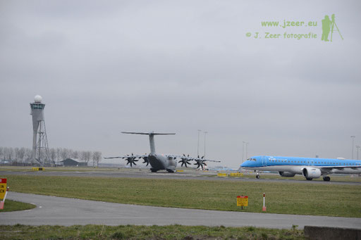